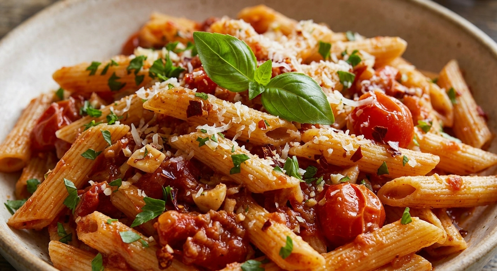
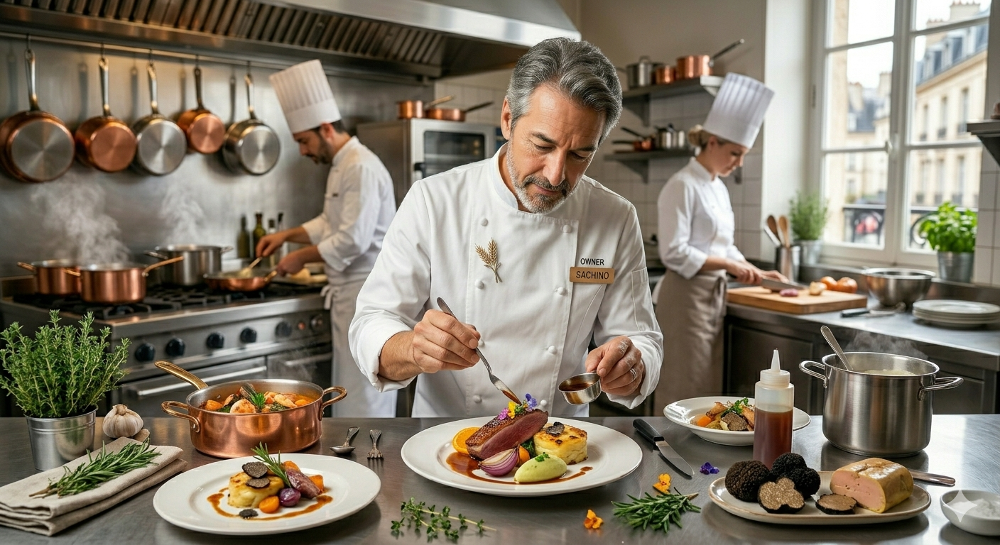

山形の隠れ家「ピントビージョ」が贈る、衝撃のひと皿。
濃厚なトマトのコクと、鮮烈な唐辛子の余韻が共鳴する。

私たちの自慢は、唐辛子のキレだけではありません。ベースとなるトマトソースの徹底した煮込み、そして厳選されたオリーブオイルの香り。これらが渾然一体となったとき、ピントビージョにしかない「究極のアラビアータ」が完成します。
美食を心ゆくまで堪能していただくのが当店の流儀。ランチタイム、パスタの大盛りはすべてのお客様に無料で提供しております。
前菜のカルパッチョから、メインの肉料理、そしてドルチェまで。一皿たりとも妥協を許さないクオリティをお約束します。
ディナー（3,000円〜）では、ソムリエが厳選したワインとのマリアージュをご提案。隠れ家のような空間で贅沢なひとときを。

山形県天童市、東本町の細い路地裏。決して目立つ場所ではありません。しかし、その不便さこそが私たちの誇りです。わざわざ足を運んでくださるお客様へ、最高の一皿を提供するために。「ピントビージョ」という名は、情熱を絶やさない私たちの約束です。
ピントビージョでの体験を、より快適に、より特別に。
お客様から寄せられた声をもとに、新たな取り組みを順次展開いたします。
お電話に加え、スマホからいつでも簡単に席やコースを即時予約可能に。記念日プレートの指定や人数変更もスムーズに行っていただけます。
Instagram / Facebookにて「本日のシェフ気まぐれパスタ」や「本日入荷の限定ワイン」を毎日発信。フォロワー限定の特別アミューズ特典も企画中。
よくあるご質問
はい。天童ホテルの裏手の細い道に位置しており、まさに「隠れ家」的な立地です。ナビゲーションアプリで「天童市東本町1丁目9−12」を検索し、慎重にお越しください。
もちろん歓迎いたします。落ち着いた空間ですので、お一人でゆっくりとお食事を楽しむ方も多くいらっしゃいます。